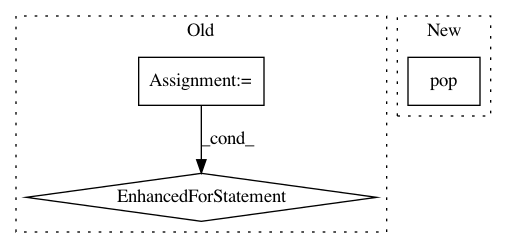

b95fcf7f52aca8ad0b1afb3cfc64c8eed534fafe,tests/keras/backend/backend_test.py,,check_single_tensor_operation,#Any#Any#Any#,43
Before Change
assert z._keras_shape == z.shape
z_list += [z]
for (z1, z2) in zip(z_list[1:], z_list[:-1]):
assert z1.shape == z2.shape
assert_allclose(z1, z2, atol=1e-05)
def check_two_tensor_operation(function_name, x_input_shape,
y_input_shape, backend_list, **kwargs):
xval = np.random.random(x_input_shape) - 0.5
yval = np.random.random(y_input_shape) - 0.5
After Change
def check_single_tensor_operation(function_name, x_shape_or_val, backend_list, **kwargs):
shape_or_val = kwargs.pop("shape_or_val", True)
assert_value_equality = kwargs.pop("assert_value_equality", True)
assert_value_with_ref = kwargs.pop("assert_value_with_ref", None)
cntk_dynamicity = kwargs.pop("cntk_dynamicity", False)
In pattern: SUPERPATTERN
Frequency: 3
Non-data size: 3
Instances
Project Name: keras-team/keras
Commit Name: b95fcf7f52aca8ad0b1afb3cfc64c8eed534fafe
Time: 2017-07-29
Author: me@taehoonlee.com
File Name: tests/keras/backend/backend_test.py
Class Name:
Method Name: check_single_tensor_operation
Project Name: streamlit/streamlit
Commit Name: 81460887a6dc118719168c98a0d7543b758d2040
Time: 2018-01-17
Author: adrien.g.treuille@gmail.com
File Name: tiny_notebook/protobuf/__init__.py
Class Name:
Method Name:
Project Name: ClimbsRocks/auto_ml
Commit Name: 9b9e491bb00be66b732d2f44b3e4375206940e61
Time: 2016-10-19
Author: climbsbytes@gmail.com
File Name: auto_ml/predictor.py
Class Name: Predictor
Method Name: make_sub_x_and_y_test